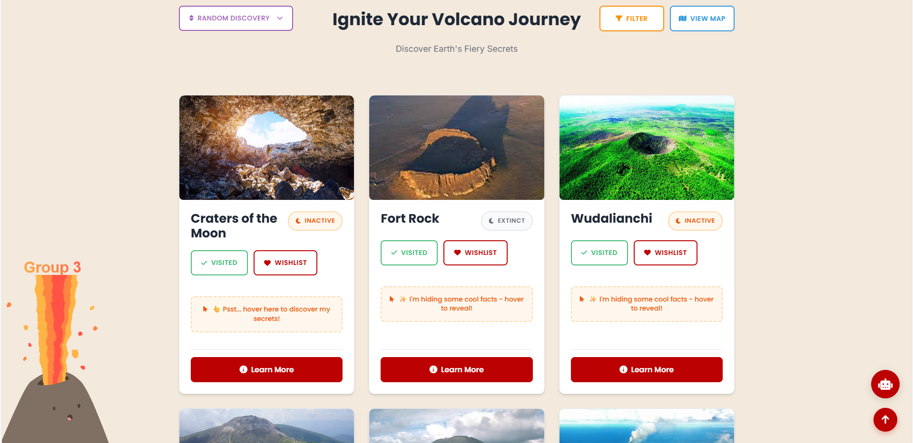

Volcanic is a web application built as the final project for our Web Technologies course at the University of Southern Denmark (SDU). It was a collaborative effort by 6 students and focuses on helping volcano enthusiasts explore, track, and organize volcanoes they have visited or want to visit.
Project goal
The app provides a playful, user-friendly experience for browsing volcanoes, saving them to lists, and unlocking achievements, while demonstrating a complete MVC setup with authentication, authorization, and CRUD workflows.
For deeper technical architecture and frontend integration details, see the group report below.
Key features & Tech stack
- Browse a large volcano database with filters and fast search.
- Save volcanoes to visited and wish-to-visit lists.
- Achievements and profile management.
- Role-based access with guest, user, and admin flows.
- Lazy-loaded volcano images for performance.
Built with Laravel (MVC), PHP, MySQL, JavaScript, HTML, and CSS. The backend manages authentication, roles, and data relationships, while the frontend delivers a responsive, interactive UI.
Ephemeral Storage (Demo): The live demo resets periodically, so data does not persist.
For setup steps, environment details, and deployment notes, please refer to the project's GitHub README.

My individual feature
I implemented the advanced search experience with pill suggestions as users type (shown below) and the control dashboard to help users quickly find volcanoes and manage interactions in one place.
▶ Press play to watch the search demo
For the technical details of my individual feature, see the PDF below.